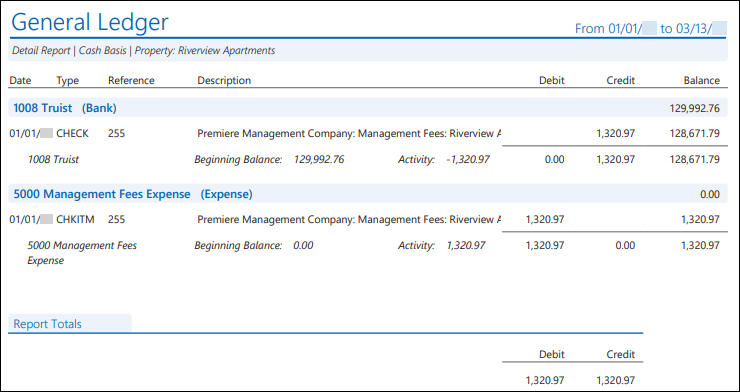
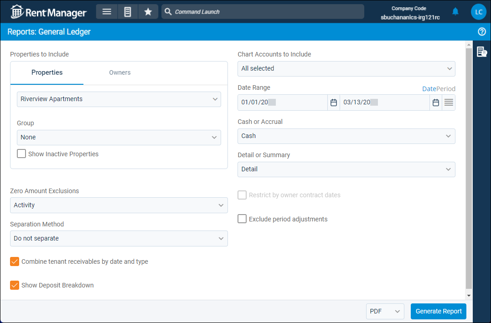

Source: https://rmxhelp.rentmanager.com/Topics/Express/Other/Reports/General-Ledger.htm
General Ledger (Report)
The General Ledger report allows you to examine transactions that impacted specific general ledger (GL) accounts over a given date range. This gives you the ability to see how GL accounts reached their balances.
More Information
The GL start date is considered the financial start date, so any transactions or information dated before the GL start date are not included in the report results.
Related Privileges
| Group | Privilege | Column |
|---|---|---|
| Letter/Email Templates/Reports/Packets | Run reports | Enabled |
Additionally, on the Reports tab, you must have access to General Ledger.
Users with the following privilege are able to view the General Ledger when drilling down on values in different reports even if they do not have privileges to run the General Ledger report. The user is limited to seeing only the GL details associated with the report they are running and is not able to change the scope of (refresh) the General Ledger report that is displayed.
| Group | Privilege | Column |
|---|---|---|
| Accounting | Override General Ledger Report Drill Down | Enabled |
For more information, refer to Control User Access.
To view the General Ledger report, do the following:
-
Go to
 arrow_forward General Ledger arrow_forward General arrow_forward General Ledger.
arrow_forward General Ledger arrow_forward General arrow_forward General Ledger.
The Reports: General Ledger page displays. -
Adjust the report options as desired. Each option is described below.
-
Generate the report in your desired file format(s).
Related Preferences
Reports may look different depending on whether or not the Use modernized report style system preference is enabled. For more information, refer to General Report Options (System Preferences).

Report Options
The report options described below determine what data displays in the report.

Properties/Owners to Include
Check each property or owner to be included in the report. Alternatively, select a property or owner Group. When the Owners tab is selected, results generate only for owners with active ownerships. If all selected owners currently do not have active ownerships, and Restrict by owner contract dates is selected, an error message displays stating that no reports were generated. For more information on establishing active ownerships, refer to Property Owners (Pop-Up).
More Information
Only information related to the properties to which you have access displays. Your access to properties can be managed from your user account or on the property's details page. For more information, refer to Limit Access to a Property.
Optionally, check Show Inactive Properties to include properties that are no longer active.
More Information
When this report option is selected, reports generate only for owners with active ownerships. If all selected owners currently do not have active ownerships, an error message displays stating that no reports were generated.
For more information on establishing active ownerships, refer to Property Owners (Pop-Up).
Zero Amount Exclusions
Select an option to determine which GL accounts are excluded from the report results.
| Option | Description |
|---|---|
|
None |
Display all selected GL accounts. |
|
Activity |
Exclude selected GL accounts that had no transactional activity during the date range. |
|
Balance |
Exclude selected GL accounts that have no balance at the end of the date range. |
|
Activity or Balance |
Exclude selected GL accounts that either have no balance at the end of the selected date range or no transactional activity during the date range. |
|
Activity and Balance |
Exclude selected GL accounts that have both no balance at the end of the selected date range and no transactional activity during the date range. |
Separation Method
This option becomes available when the Properties tab is selected.

Select one of the following options to determine how the report results are batched:
| Option | Description |
|---|---|
|
Do not separate |
All selected properties are combined into a single report. |
|
Separate by Properties |
Generates a separate report for each selected property. |
|
Separate by Units |
Generates a separate report for each unit associated with the selected properties. |
Combine Tenant Receivables by Date and Type
Check to display multiple tenant receivables (payments, NSF adjustments, and so on) as a single line item if the Date and Type of the transactions are the same. This report option applies only when the Detail or Summary report option has Detail enabled.
Show Deposit Breakdown
Check or uncheck this option to determine how deposits display in the report results.
| Option | Description |
|---|---|
|
Checked |
Displays the individual payments that make up deposits and management fees. The Description column displays the date of the payment and the account who made the payment. |
|
Unchecked |
Displays the total deposit and management fee as a single line item. For deposits, the Description column displays the text Tenant payment bank deposit. For management fees, the Description column displays the text Management fees for multiple properties. |
Chart Accounts to Include
The report displays transactions that debit or credit any of the selected general ledger (GL) accounts. If no transactional activity took place during the selected date range, the report displays No activity in the period.
In addition to manually selecting GL accounts, you can use the following options to filter and select the accounts. The list of GL accounts updates depending on the options selected here.
| Option | Description |
|---|---|
|
Mapping |
Select the name of the desired mapping method to customize the display of GL accounts included in the report by using the virtual accounts of a chart mapping. For more information, refer to Chart Accounts Mapping (Page). If no chart account mappings are created, the drop-down list displays None. |
|
From Account |
To set a range of GL accounts, select the first account in your range from the drop-down list. All accounts between and including the From Account and To Account are checked in the list. |
|
To Account |
To set a range of GL accounts, select the last account in your range from the drop-down list. All accounts between and including the From Account and To Account are checked in the list. |
|
Group |
Select a GL account type group from the drop-down list to quickly select all accounts of that type. For example, selecting Bank checks all the banks in the list. |
Date Range
Enter or select the date range to determine the data that displays in the report.
To the right of the Date Range option, you can click Date to manually select a date range, or Period select a date range based on accounting periods.
Set a Date Range
In the Date Range section, set the From and To dates for which the report should examine data.
These fields automatically populate with today’s date. Enter a different date or select a date from the calendar. Alternatively, adjust the dates using the available preset buttons or click  to open more options for setting a date range.
to open more options for setting a date range.
Select an Accounting Period
Related Preferences
To generate the report using accounting periods, the General Ledger Settings (System Preferences) option to Enable accounting periods must be enabled.
Financial reports default to the manual Date view unless the General Ledger Settings (System Preferences) option to Default to accounting periods for financial reports is checked. Enabling this option sets the financial reports to default to the Period view for Date Range.
Configure the following options to determine the period Date Range uses:
| Option | Description |
|---|---|
|
Series |
Select the desired series, as defined in accounting periods. |
|
Single Period |
Select Single Period to generate the report for one accounting period. When this option is selected, you can also select the Year of the period you wish to use and the Period, which allows you to generate the report from the period's Start Date through the period's End Date. |
|
Multiple Periods |
Select Multiple Periods to generate the report across multiple accounting periods. When this option is selected, you can also select a Start Year and End Year or a Start Period and End Period to determine the To and From date for which the report is generated. |
Cash or Accrual
This option determines whether the financial activity is calculated on a cash or accrual basis.
| Option | Description |
|---|---|
|
Accrual |
Includes all transactions for which income was earned and expenses were incurred, regardless of whether the payment was received or disbursed. |
|
Cash |
Includes only transactions for which payments are received or made. |
Detail or Summary
This option determines how much information is displayed in the report.
| Option | Description |
|---|---|
|
Detail |
Displays a line item for each transaction organized by the GL account. |
|
Summary |
Displays the total amount of transactions combined into a single row for each GL account. |
Restrict by Owner Contract Dates
This option becomes available when the Owner tab is selected.

Check to display only data that is within the active contract dates for each of the selected owners, regardless of the date range. This option is useful if, for example, your contract with one owner is ending and another contract with a different owner is beginning.
| Option | Description |
|---|---|
|
Checked |
The report filters to display only data within the selected owner or owners' active contract. For example, if the report is generated for 01/01/2026–12/31/2026, and Owner A has an active contract from January to June of 2026, the report displays only data at the properties owned by Owner A from January 2026 to June 2026. |
|
Unchecked |
The report displays current data for any months included in the report date range regardless of owner contracts. |
Exclude Period Adjustments
Check to remove any journal entries marked as a Period Adjustment from the report results.
Report Results
The report results are described below including, if applicable, section, column, and subreport or tab descriptions.
Report Header
The report header displays the report name and key information selected in the report options, such as date information and which properties were examined in the report.
If the Restrict by owner contract dates report option is checked and the selected Date Range begins before and/or ends after the active owner contract, the report header displays only the dates where the active owner contract and the selected Date Range overlap. Filtered results display an asterisk (*) after the Date Range.
Column Descriptions
The report generates with different columns depending on the selection in the Detail or Summary field. The report output for each report option is described below.
Detail
If the report option for Detail is selected, the following columns display.
| Column | Description |
|---|---|
|
Date |
The date on which the transaction took place. |
|
Type |
The type of transaction took place. For example, if a check was written, CHECK displays. |
|
Reference |
The transaction’s reference number. For example, if a check was written, the check number displays. If the Combine tenant receivables by date and type report option is enabled, MULTI displays when transactions have the same posting Date and transaction Type. |
|
Description |
A description of the transaction. This includes the following:
If the Combine tenant receivables by date and type report option is enabled, MULTI displays when transactions have the same posting Date and transaction Type. |
|
Debit |
The amount that was debited from the account for each transaction. Debits increase expense and asset accounts, but decrease income, equity, and liability accounts. |
|
Credit |
The amount that was credited to the account for each transaction. Credits increase income, equity, and liability accounts, but decrease expense and asset accounts. |
|
Balance |
The running balance of the GL account after each transaction took place. |
Summary
If the report option for Summary is checked, the following columns display.
| Column | Description |
|---|---|
|
Account |
The unique account name and number used as the system-wide identifier for the GL account. |
|
Beginning Balance |
The balance of the GL account prior to the beginning of the selected Date Range. |
|
Type |
The account type that most closely defines the purpose of the GL account (e.g., Bank, Expense, Equity, etc.). For more information, refer to Types on GL Reports. |
|
Debits |
The total amount that was debited from the account at the end of the date range. Debits increase expense and asset accounts, but decrease income, equity, and liability accounts. |
|
Credits |
The total amount that was credited to the account at the end of the date range. Credits increase income, equity, and liability accounts, but decrease expense and asset accounts. |
|
Ending Balance |
The balance of the GL account at the end of the selected Date Range. |